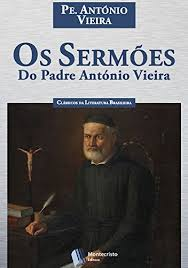

Padre Antônio Vieira foi um dos maiores escritores e oradores do Barroco Literário da língua portuguesa. Ele nasceu em Lisboa, Portugal, em 6 de fevereiro de 1608, filho de Cristóvão Vieira e Maria de Azevedo. Em 1614, ele e sua família se mudaram para o Brasil, onde ele estudou no Colégio dos Jesuítas de Salvador. Aos 15 anos, ele ingressou na Companhia de Jesus como noviço e iniciou sua atividade missionária no interior da Bahia, logo após a invasão holandesa em Salvador.
Em 1633, ele proferiu seus dois primeiros sermões, ambos de caráter político: o primeiro falava da invasão holandesa; o segundo, atacava a escravidão indígena. Essa sua postura, atrelada à sua defesa dos cristãos-novos, gerou inimizades entre os colonos e membros da Igreja. Em 1641, ele retornou a Lisboa, em um momento crucial da história portuguesa: a restauração do reinado de Portugal com D. João IV, o primeiro monarca da casa de Bragança. Ele se tornou o maior pregador da corte, conselheiro de D. João IV, mediador e representante de Portugal em relações econômicas e políticas em Paris, Amsterdã e Roma. Ele defendia os direitos de judeus e cristãos novos e pregava a volta deles para Portugal, país católico que os expulsara.
Em 1653, ele voltou ao Brasil e se dedicou às missões de catequese no Pará e no Maranhão, onde lutou contra os colonos portugueses que desejavam escravizar os índios. Em 1661, ele foi expulso do Maranhão pelos senhores de escravos que não aceitavam suas ideias¹. Ele voltou para Lisboa, onde defendeu a liberdade religiosa, na época em que as pessoas suspeitas de heresia eram condenadas pela inquisição. Os inquisidores desconfiavam da aproximação de Vieira com os judeus. Ele foi preso pela inquisição entre 1666 e 1667, que o acusou de praticar heresias.
Ele foi libertado por intervenção do papa Clemente IX e passou a viver em Roma até 1675. Nesse período, ele escreveu sua obra mais famosa: História do Futuro, na qual ele profetizava o surgimento do Quinto Império, um reino universal sob o domínio de Portugal. Ele também escreveu outras obras importantes, como Esperanças de Portugal (1659), Clavis Prophetarum (1666) e Defesa perante o Tribunal do Santo Ofício (1674).
Em 1675, ele retornou ao Brasil e continuou sua obra missionária no Maranhão até 1681. Ele voltou a Lisboa em 1681 e passou seus últimos anos escrevendo seus sermões e cartas. Ele morreu em Salvador, Bahia, em 18 de julho de 1697, deixando um legado de cerca de 200 sermões e mais de 500 cartas.
Algumas frases famosas de padre Antônio Vieira são
-

- - "Não há coisa mais fácil que vencer os outros homens; não há coisa mais difícil que vencer-nos a nós mesmos." (Sermão da Sexagésima)
- - "A palavra é o instrumento irresistível da conquista dos povos." (Sermão da Sexagésima)
- - "Quem não sabe ser pobre não sabe ser rico." (Sermão do Bom Ladrão)
- -"Não há riqueza mais perigosa do que uma pobreza presunçosa." (Sermão do Bom Ladrão)
- - "Não há melhor espelho que um amigo verdadeiro." (Carta ao Padre Antônio Fernandes)